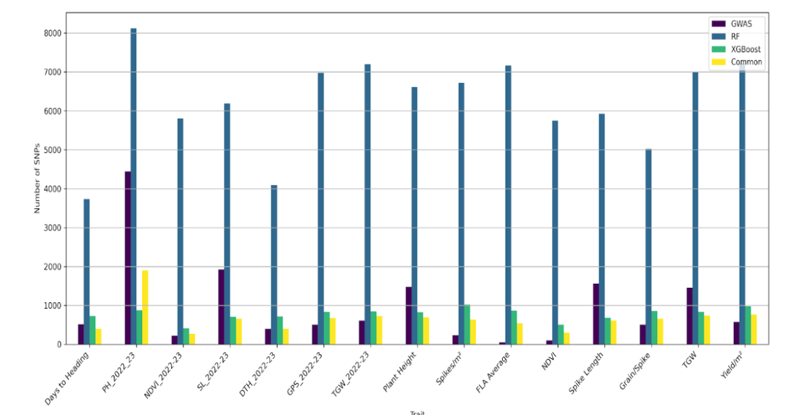
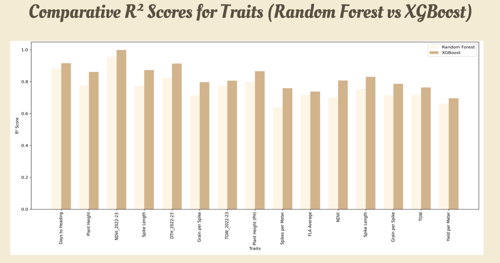

Genomic Selection for Resilient Crop Breeding in South Punjab
Feature Selection Summary

Model Accuracy Comparison (XGBoost vs Random Forest)
XGBoost Accuracy
| Trait |
R² Score |
| Days to heading | 0.9161 |
| ph_2022-23 | 0.8613 |
| NDVI_2022-23 | 0.993 |
| SL_2022-23 | 0.8732 |
| DTH_2022-23 | 0.9140 |
| GPS_2022-23 | 0.7973 |
| TGW_2022-23 | 0.8064 |
| Plant height | 0.8662 |
| Spikes per meter square | 0.7592 |
| FLA Average | 0.738 |
| NDVI | 0.8076 |
| Spike Length | 0.8303 |
| Grain per Spike | 0.7896 |
| TGW | 0.7641 |
| Yield per meter square | 0.6962 |
Random Forest Accuracy
| Trait |
R² Score |
| Days to heading | 0.8826 |
| ph_2022-23 | 0.7774 |
| NDVI_2022-23 | 0.9556 |
| SL_2022-23 | 0.7744 |
| DTH_2022-23 | 0.8234 |
| GPS_2022-23 | 0.7148 |
| TGW_2022-23 | 0.7753 |
| Plant height | 0.8004 |
| Spikes per meter square | 0.6399 |
| FLA Average | 0.7179 |
| NDVI | 0.7001 |
| Spike Length | 0.7543 |
| Grain per Spike | 0.7138 |
| TGW | 0.7167 |
| Yield per meter square | 0.6627 |
Visual Comparison of Model Accuracy
